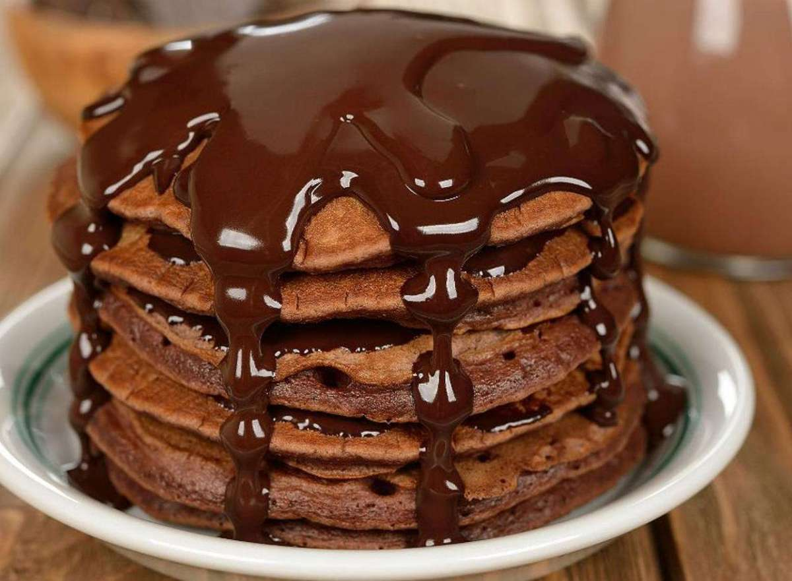

Bahan-bahan:
 100 gram tepung terigu
100 gram tepung terigu
Tepung terigu adalah bubuk yang terbuat dari penggilingan gandum yang digunakan untuk konsumsi manusia. Varietas gandum disebut "lunak" atau "lemah" jika kandungan gluten rendah, dan disebut "keras" atau "kuat" jika mereka memiliki konten gluten tinggi.
 4 sendok makan gula pasir, manisnya sesuai selera
4 sendok makan gula pasir, manisnya sesuai selera
Gula adalah suatu karbohidrat sederhana yang menjadi sumber energi dan komoditas perdagangan utama. Gula paling banyak diperdagangkan dalam bentuk kristal sukrosa padat. Gula digunakan untuk mengubah rasa menjadi manis dan keadaan makanan atau minuman.
 1 butir telur
1 butir telur
Telur adalah salah satu bahan makanan hewani yang dikonsumsi selain daging, ikan dan susu. Umumnya telur yang dikonsumsi berasal dari jenis-jenis burung, seperti ayam, bebek, dan angsa, akan tetapi telur-telur yang lebih kecil seperti telur ikan kadang juga digunakan sebagai campuran dalam hidangan.
 1 sendok makan coklat bubuk
1 sendok makan coklat bubuk
Kakao padat adalah sebuah campuran beberapa bahan yang dipadukan setelah mentega kakao disarikan dari biji kakao. Saat dijual sebagai produk akhir, ini juga disebut bubuk kakao atau kakao. Kakao padat adalah bahan utama dari coklat, sirup coklat, dan manisan coklat.
 1/4 sendok teh garam
1/4 sendok teh garam
Garam dapur adalah sejenis mineral yang dapat membuat rasa asin. Biasanya garam dapur yang tersedia secara umum adalah Natrium klorida (NaCl) yang dihasilkan oleh air laut. Garam dalam bentuk alaminya adalah mineral kristal yang dikenal sebagai batu garam atau halite. Garam sangat diperlukan tubuh, tetapi bila dikonsumsi secara berlebihan dapat menyebabkan berbagai penyakit, termasuk tekanan darah tinggi (hipertensi). Selain itu garam juga digunakan untuk mengawetkan makanan dan sebagai bumbu. Untuk mencegah penyakit gondok, garam dapur juga sering ditambahi yodium.
Bubuk pengembang (bahasa Inggris: baking powder) adalah bahan pengembang yang dipakai untuk meningkatkan volume dan memperingan tekstur makanan yang dipanggang seperti muffin, bolu, scone, dan biskuit. Bubuk pengembang bekerja dengan melepaskan gas karbon dioksida ke dalam adonan melalui sebuah reaksi asam-basa, menyebabkan gelembung-gelembung di dalam adonan yang masih basah, dan ketika dipanaskan adonan memuai; ketika adonan matang, gelembung-gelembung itu terperangkap hingga menyebabkan kue menjadi naik dan ringan. Bubuk pengembang dipakai untuk menggantikan ragi ketika rasa fermentasi tidak diingini pada makanan yang dihasilkan, atau ketika adonan kurang memiliki sifat elastis untuk menahan gelembung-gelembung gas lebih dari beberapa menit. Roti yang dibuat dengan memakai bahan pengembang kimia disebut roti cepat.
 50 gram margarin yang telah dilelehkan
50 gram margarin yang telah dilelehkan
Margarin ialah mentega buatan. Bisa dibuat dari minyak nabati, atau minyak hewani. Bisa juga mengandung susu saringan, garam dan pengemulsi. Margarin mengandung lebih sedikit lemak daripada mentega, sehingga margarin banyak digunakan sebagai pengganti mentega. Ada juga margarin rendah kalori, yang mengandung lemak lebih sedikit. Margarin merupakan produk turunan dari minyak kelapa sawit dan mengandung lemak tak jenuh yang aman bagi kesehatan. Minyak kelapa sawit yang berbentuk cair terlebih dahulu melewati proses penyuntikan hidrogen hingga padat. Dulunya, cara pembuatan margarin sempat menuai masalah karena disebut-sebut mengandung trans fat yang berbahaya bagi tubuh karena penggunaan zat hidrogen tersebut. Namun seiring kemajuan teknologi, kini margarin tidak lagi mengandung trans fat. “Pemecahan struktur penggunaan zat hidrogen harus sampai tuntas untuk menghilangkan zat berbahaya tersebut,” jelas Isti. Memilki kandungan air sekitar 16%, margarin memiliki titik leleh yang cukup tinggi sekitar 37 - 42° C. Hal tersebut yang membuat margarin aman disimpan dalam suhu ruang tanpa harus takut meleleh. Karena berbahan dasar minyak kelapa sawit, margarin memiliki warna kuning lebih cerah dibanding mentega yang biasanya kuning pucat. Tidak adanya aroma susu layaknya mentega menjadi salah satu kekurangan margarin. Sering kali para produsen menyiasati kekurangan tersebut dengan mencampurkannya dengan mentega hanya untuk mendapatkan aroma khasnya.
 1/2 sachet susu kental manis coklat
1/2 sachet susu kental manis coklat
Susu kental manis—disingkat SKM, dikenal juga sebagai susu kental, kental manis—adalah susu sapi yang airnya dihilangkan dan ditambahkan gula, sehingga menghasilkan susu yang sangat manis rasanya dan dapat bertahan selama satu tahun bila tidak dibuka.
Susu adalah cairan bergizi berwarna putih yang dihasilkan oleh kelenjar susu mamalia, salah satunya manusia. Susu adalah sumber gizi utama bagi bayi sebelum mereka dapat mencerna makanan padat. Susu binatang (biasanya sapi) juga diolah menjadi berbagai produk seperti mentega, yogurt, es krim, keju, susu kental manis, susu bubuk dan lain-lainnya untuk konsumsi manusia.
Margarin ialah mentega buatan. Bisa dibuat dari minyak nabati, atau minyak hewani. Bisa juga mengandung susu saringan, garam dan pengemulsi. Margarin mengandung lebih sedikit lemak daripada mentega, sehingga margarin banyak digunakan sebagai pengganti mentega. Ada juga margarin rendah kalori, yang mengandung lemak lebih sedikit. Margarin merupakan produk turunan dari minyak kelapa sawit dan mengandung lemak tak jenuh yang aman bagi kesehatan. Minyak kelapa sawit yang berbentuk cair terlebih dahulu melewati proses penyuntikan hidrogen hingga padat. Dulunya, cara pembuatan margarin sempat menuai masalah karena disebut-sebut mengandung trans fat yang berbahaya bagi tubuh karena penggunaan zat hidrogen tersebut. Namun seiring kemajuan teknologi, kini margarin tidak lagi mengandung trans fat. “Pemecahan struktur penggunaan zat hidrogen harus sampai tuntas untuk menghilangkan zat berbahaya tersebut,” jelas Isti. Memilki kandungan air sekitar 16%, margarin memiliki titik leleh yang cukup tinggi sekitar 37 - 42° C. Hal tersebut yang membuat margarin aman disimpan dalam suhu ruang tanpa harus takut meleleh. Karena berbahan dasar minyak kelapa sawit, margarin memiliki warna kuning lebih cerah dibanding mentega yang biasanya kuning pucat. Tidak adanya aroma susu layaknya mentega menjadi salah satu kekurangan margarin. Sering kali para produsen menyiasati kekurangan tersebut dengan mencampurkannya dengan mentega hanya untuk mendapatkan aroma khasnya.
Kakao padat adalah sebuah campuran beberapa bahan yang dipadukan setelah mentega kakao disarikan dari biji kakao. Saat dijual sebagai produk akhir, ini juga disebut bubuk kakao atau kakao. Kakao padat adalah bahan utama dari coklat, sirup coklat, dan manisan coklat. Sirup cokelat adalah sebuah penyedap rasa manis rasa coklat. Sirup tersebut sering dipakai sebagai topping atau saus hidangan penutup untuk berbagai hidangan penutup, seperti es krim atau dicampur dengan susu untuk membuat susu cokelat atau dicampur dengan susu dan es krim untuk membuat susu kocok coklat.
Cara Membuat:
- Siapkan wadah yang cukup besar lalu masukkan telur dan gula pasir. Kocok telur dengan garpu atau whisk sampai gula larut dan telur agak mengembang.
- Tambahkan tepung terigu, coklat bubuk, garam, dan baking powder. Aduk rata agar semua bahan tercampur rata.
- Baru tuang susu cair secukupnya ke dalam adonan. Aduk dengan whisk sampai adonan mengental.
- Tambahkan margarin cair dan susu kental manis coklat. Aduk rata kembali sampai kekentalannya cukup.
- Setelah adonan jadi, panaskan teflon dan beri sedikit margarin sampai meleleh.
- Tuang adonan pancake menggunakan sendok sayur ke dalam teflon.
- Panggang pancake dengan api kecil sampai matang. Jangan lupa dibalik agar matangnya merata.
- Setelah matang, angkat dan taruh dalam piring saji. Lakukan proses di atas sampai semua adonan habis.
- Tumpuk pancake dan beri saus coklat sebagai topping.
- Pancake coklat siap disajikan.